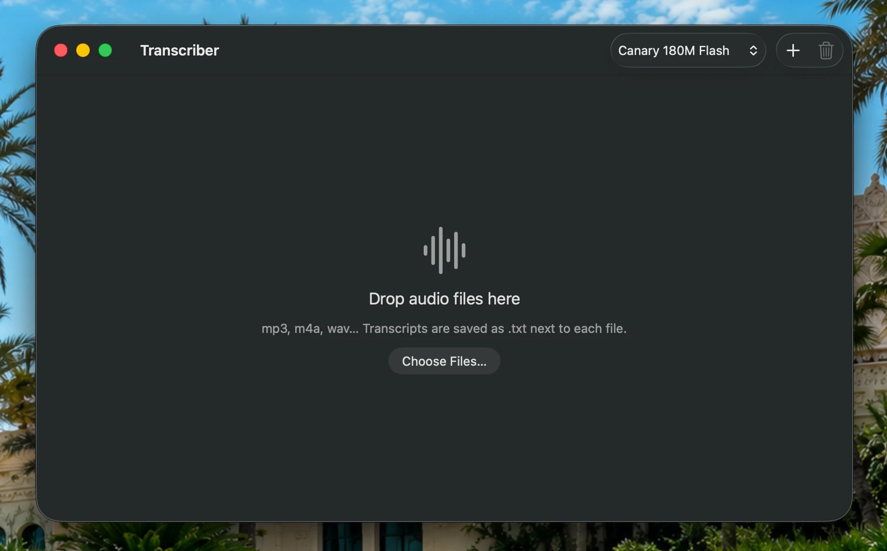

Transcriber
Free, on-device transcription for audio files on Mac.
Nothing leaves your computer.

What it does
- Drop in mp3, m4a or wav files, one or a whole batch, and get a
.txttranscript next to each one. - Shows progress per file and for the whole batch, with word count, time left and speed.
- Two speech models: Parakeet V3 (most accurate, 25 languages) and Canary 180M Flash (faster and lighter, English, German, Spanish and French).
- Fast: about 8 to 12 seconds for 5 minutes of audio on an M3.
- Works with the models from Handy if you already use it, or downloads them for you.
Free, and staying free
No account, no subscription, no ads, no tracking. Use it, change it and share it however you like. The one rule is that nobody can sell it.
Requirements
- A Mac with Apple Silicon, running macOS 14 or later.
- uv, which runs the speech engine:
brew install uv